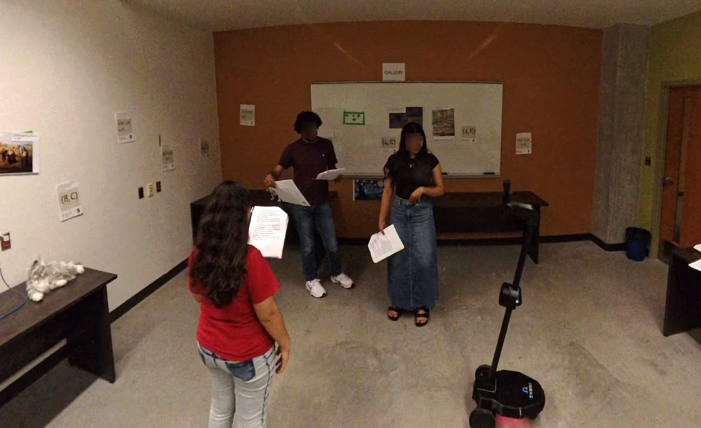
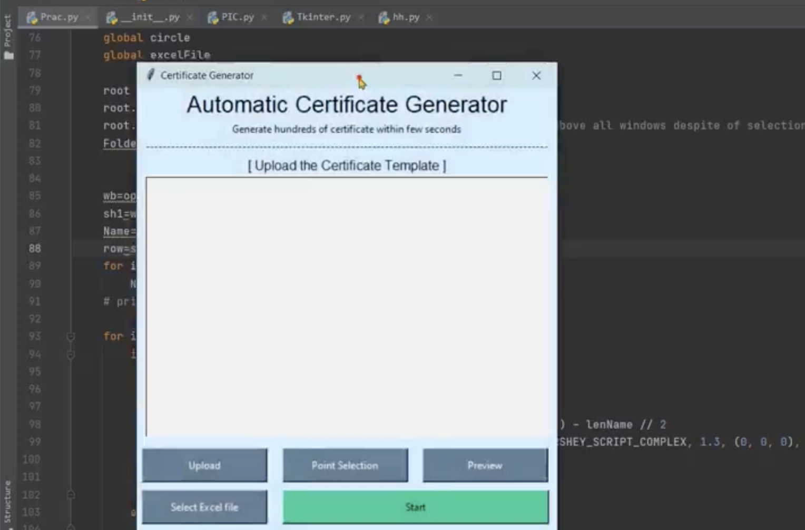
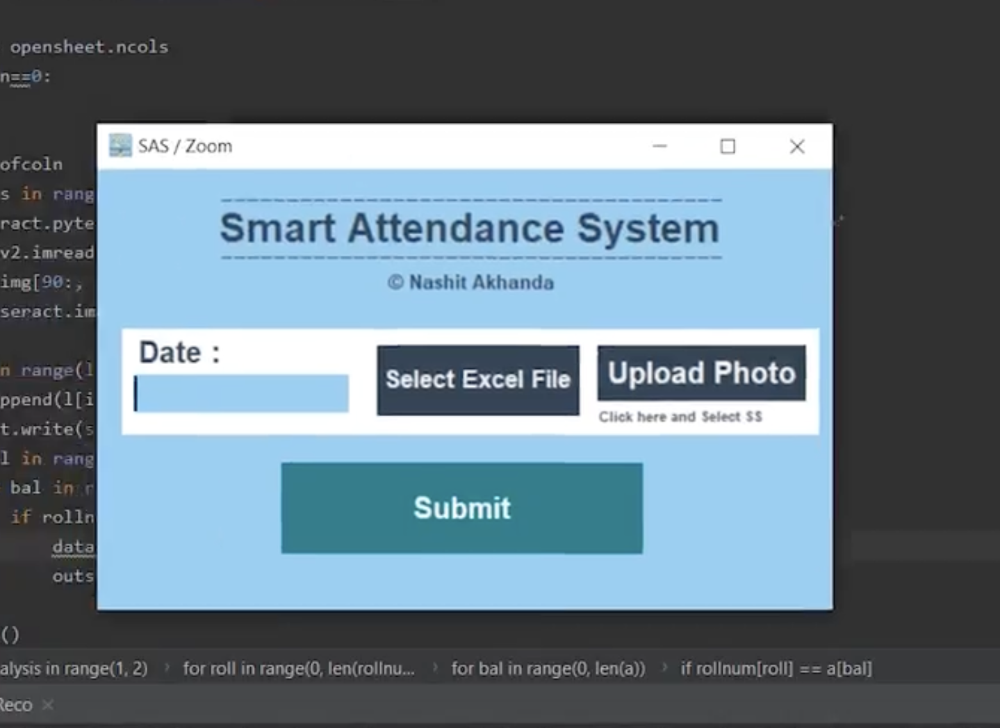

Projects
Research Projects

Group Dynamics in Human-Robot Collaboration
An exploratory study of how a remote person, joining through a telepresence robot,
is included when collaborating with a co-located group. It examines attention,
leadership, and communication as team size changes.
Collaboration with the University of Southampton.

Identity Presentation & Social Exposure in Telepresence
A study on how the way a remote operator presents themselves through a telepresence
robot shapes their comfort and social behavior when interacting with people in public.
Collaboration with the University of Salerno.
Course & Personal Projects
TiltControl: Tilt-Based Teleoperation of the e-puck
A browser-based smartphone interface that lets non-expert users drive an e-puck robot
by tilting the phone, with a personalized neutral position, smooth speed control, and
simplified obstacle feedback.
Course: COMP 7570 — Robotics for Human-Robot Interaction.
PhoneDuo: Gamified Smartphone Learning for Older Adults
A gamified web app that helps older adults practice iPhone settings safely in a
simulated environment, built and evaluated with a user study at a local Active Living Center.
Course: COMP 7570 — Designing Technology for the Aging Population.
3D Mapping & Autonomous Navigation with ROSBOT
Built a 3D map of an environment using RTAB-Map and programmed ROSBOT to navigate it autonomously with the Robot Operating System.
Automatic Pick-and-Place with a Robotic Arm & OpenCV
A robotic arm that sorts objects by color, using OpenCV for color detection to guide the pick-and-place motion.

Automatic Certificate Generator
A system that generates multiple certificates in seconds from a template, automating what is otherwise a slow, repetitive task.

Smart Attendance System (Zoom-Based)
Automates roll calls by reading attendance from uploaded Zoom screenshots, removing the need to check participants manually.